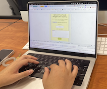
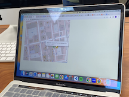

Usability Testing & Results
Tester 1
Key Observations
- Tester1 scrolled through the website to explore all the features.
- She zoomed in and out on the map and noticed the customized icons. When she clicked on the icons, a popup with text appeared.
- Tester1 successfully uploaded her own image to the website and the feature worked perfectly.

Feedback
- Connect to the seal is confusing: To address this confusion, I will add a "Learn More" button or link that provides additional information about the Davis Centennial Seal. This will help users understand the connection between the website and the seal.
- Header description is confusing: I will update the header description to provide a clearer and more detailed explanation of different features of the website. This will help users better understand the purpose and benefits of the website.
- Keep the seal title inside the block horizontally: I will adjust the layout to ensure that the seal title remains positioned horizontally within the block, instead of using a three-column layout. This change will provide a more visually cohesive design.
- Use fade-in animation for all the blocks: To enhance the user experience, I will implement a fade-in animation for all the blocks on the website. This will create a smooth and visually appealing transition effect when the content appears on the page.
- Add a link to the seal for closer connection: I will add a prominent link to the seal on the website, allowing users to easily access more information and establish a closer connection to the Davis Centennial Seal.
Tester 2
Key Observations
- Tester 2 encountered some difficulty exploring the map, such as moving the mouse to find the icons.
- He successfully uploaded multiple images to the website.
- Tester 2 expressed a liking for the flip animation.

Feedback
- Map feature improvement: To enhance the map feature, I will include more information in the food guide. When users click on the icons, I will provide restaurant images and their websites. This additional information will offer users more context and make the map feature more informative.
- Balancing images and text: Tester 2 suggested having more images on the left side since there is a significant amount of text in the blocks. I will address this by incorporating more images alongside the text, creating a better balance and visual appeal.
- Confusion about the button in the header: Tester 2 found the button in the header confusing and unsure of its relevance to the project. To address this, I will replace the button with links that directly lead to different features, such as image upload and the map. This way, users can easily navigate to specific sections they are interested in.
By addressing these feedback points, I will improve the clarity, design, and user experience of the website, providing a more seamless and connected experience for users.